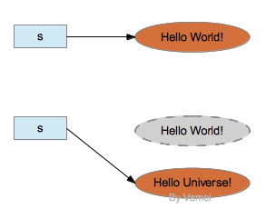
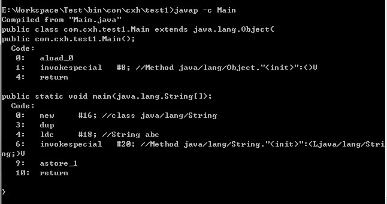

<!DOCTYPE html><html lang="en"><head><meta name="generator" content="Hexo 3.9.0"><meta charset="utf-8"><meta name="keywords" content="松林羊, ysl, songlinsheep, andus, blog, 个人站点, 个人网站"><meta name="description" content="松林羊的个人网站，用于记录，分享。欢迎交流^-^"><meta name="viewport" content="width=device-width,initial-scale=1,maximum-scale=1"><title> 【转载】深入理解Java中的String | 松林羊</title><link rel="shortcut icon" href="/smile.ico"><link rel="stylesheet" href="/css/style.css"><link rel="stylesheet" href="/fancybox/jquery.fancybox.min.css"><script src="/js/pace.min.js"></script><script>!function(e,t,o,c,i,a,n){e.DaoVoiceObject=i,e[i]=e[i]||function(){(e[i].q=e[i].q||[]).push(arguments)},e[i].l=1*new Date,a=t.createElement(o),n=t.getElementsByTagName(o)[0],a.async=1,a.src=c,a.charset="utf-8",n.parentNode.insertBefore(a,n)}(window,document,"script",("https:"==document.location.protocol?"https:":"http:")+"//widget.daovoice.io/widget/0f81ff2f.js","daovoice"),daovoice("init",{app_id:"1559132c"}),daovoice("update")</script></head></html><body><main class="content"><section class="outer"><article id="post-【转载】深入理解Java中的String" class="article article-type-post" itemscope itemprop="blogPost" data-scroll-reveal><div class="article-inner"><header class="article-header"><h1 class="article-title" itemprop="name"> 【转载】深入理解Java中的String</h1></header><div class="article-meta"> <a href="/2019/03/11/【转载】深入理解Java中的String/" class="article-date"><time datetime="2019-03-11T04:28:05.000Z" itemprop="datePublished">2019-03-11</time></a><div class="article-category"> <a class="article-category-link" href="/categories/编程语言/">编程语言</a></div> &emsp;<i class="fe fe-bar-chart"></i> <span class="post-count">8k</span>字 &emsp;<i class="fe fe-clock"></i> <span class="post-count">32</span>分钟</div><div class="tocbot"></div><div class="article-entry" itemprop="articleBody"><p><font size="4" color="red">个人所见最齐全最透彻的关于JAVA String的总结。</font><br>原文：<a href="https://www.cnblogs.com/xiaoxi/p/6036701.html" target="_blank" rel="noopener">https://www.cnblogs.com/xiaoxi/p/6036701.html</a></p><h1 id="深入理解Java中的String"><a href="#深入理解Java中的String" class="headerlink" title="深入理解Java中的String"></a>深入理解Java中的String</h1><h3 id="一、String类"><a href="#一、String类" class="headerlink" title="一、String类"></a>一、String类</h3><p>想要了解一个类，最好的办法就是看这个类的实现源代码，来看一下String类的源码：</p><figure class="highlight java"><table><tr><td class="gutter"><pre><span class="line">1</span><br><span class="line">2</span><br><span class="line">3</span><br><span class="line">4</span><br><span class="line">5</span><br><span class="line">6</span><br><span class="line">7</span><br><span class="line">8</span><br><span class="line">9</span><br><span class="line">10</span><br><span class="line">11</span><br><span class="line">12</span><br><span class="line">13</span><br><span class="line">14</span><br><span class="line">15</span><br><span class="line">16</span><br><span class="line">17</span><br><span class="line">18</span><br><span class="line">19</span><br><span class="line">20</span><br></pre></td><td class="code"><pre><span class="line"><span class="keyword">public</span> <span class="keyword">final</span> <span class="class"><span class="keyword">class</span> <span class="title">String</span></span></span><br><span class="line"><span class="class">    <span class="keyword">implements</span> <span class="title">java</span>.<span class="title">io</span>.<span class="title">Serializable</span>, <span class="title">Comparable</span>&lt;<span class="title">String</span>&gt;, <span class="title">CharSequence</span></span></span><br><span class="line"><span class="class"></span>&#123;</span><br><span class="line">    <span class="comment">/** The value is used for character storage. */</span></span><br><span class="line">    <span class="keyword">private</span> <span class="keyword">final</span> <span class="keyword">char</span> value[];</span><br><span class="line"></span><br><span class="line">    <span class="comment">/** The offset is the first index of the storage that is used. */</span></span><br><span class="line">    <span class="keyword">private</span> <span class="keyword">final</span> <span class="keyword">int</span> offset;</span><br><span class="line"></span><br><span class="line">    <span class="comment">/** The count is the number of characters in the String. */</span></span><br><span class="line">    <span class="keyword">private</span> <span class="keyword">final</span> <span class="keyword">int</span> count;</span><br><span class="line"></span><br><span class="line">    <span class="comment">/** Cache the hash code for the string */</span></span><br><span class="line">    <span class="keyword">private</span> <span class="keyword">int</span> hash; <span class="comment">// Default to 0</span></span><br><span class="line"></span><br><span class="line">    <span class="comment">/** use serialVersionUID from JDK 1.0.2 for interoperability */</span></span><br><span class="line">    <span class="keyword">private</span> <span class="keyword">static</span> <span class="keyword">final</span> <span class="keyword">long</span> serialVersionUID = -<span class="number">6849794470754667710L</span>;</span><br><span class="line"></span><br><span class="line">    ........</span><br><span class="line">&#125;</span><br></pre></td></tr></table></figure><p>从上面可以看出几点：</p><p>1）<font color="#F27003">String类是final类，也即意味着String类不能被继承，并且它的成员方法都默认为final方法。</font>在Java中，被final修饰的类是不允许被继承的，并且该类中的成员方法都默认为final方法。</p><p>2）上面列举出了String类中所有的成员属性，从上面可以看出<font color="#F27003">String类其实是通过char数组来保存字符串的</font>。</p><p>下面再继续看String类的一些方法实现：</p><figure class="highlight java"><table><tr><td class="gutter"><pre><span class="line">1</span><br><span class="line">2</span><br><span class="line">3</span><br><span class="line">4</span><br><span class="line">5</span><br><span class="line">6</span><br><span class="line">7</span><br><span class="line">8</span><br><span class="line">9</span><br><span class="line">10</span><br><span class="line">11</span><br><span class="line">12</span><br><span class="line">13</span><br><span class="line">14</span><br><span class="line">15</span><br><span class="line">16</span><br><span class="line">17</span><br><span class="line">18</span><br><span class="line">19</span><br><span class="line">20</span><br><span class="line">21</span><br><span class="line">22</span><br><span class="line">23</span><br><span class="line">24</span><br><span class="line">25</span><br><span class="line">26</span><br><span class="line">27</span><br><span class="line">28</span><br><span class="line">29</span><br><span class="line">30</span><br><span class="line">31</span><br><span class="line">32</span><br><span class="line">33</span><br><span class="line">34</span><br><span class="line">35</span><br><span class="line">36</span><br><span class="line">37</span><br><span class="line">38</span><br><span class="line">39</span><br><span class="line">40</span><br><span class="line">41</span><br><span class="line">42</span><br><span class="line">43</span><br><span class="line">44</span><br><span class="line">45</span><br><span class="line">46</span><br><span class="line">47</span><br><span class="line">48</span><br><span class="line">49</span><br><span class="line">50</span><br><span class="line">51</span><br><span class="line">52</span><br></pre></td><td class="code"><pre><span class="line"><span class="function"><span class="keyword">public</span> String <span class="title">substring</span><span class="params">(<span class="keyword">int</span> beginIndex, <span class="keyword">int</span> endIndex)</span> </span>&#123;</span><br><span class="line">    <span class="keyword">if</span> (beginIndex &lt; <span class="number">0</span>) &#123;</span><br><span class="line">        <span class="keyword">throw</span> <span class="keyword">new</span> StringIndexOutOfBoundsException(beginIndex);</span><br><span class="line">    &#125;</span><br><span class="line">    <span class="keyword">if</span> (endIndex &gt; count) &#123;</span><br><span class="line">        <span class="keyword">throw</span> <span class="keyword">new</span> StringIndexOutOfBoundsException(endIndex);</span><br><span class="line">    &#125;</span><br><span class="line">    <span class="keyword">if</span> (beginIndex &gt; endIndex) &#123;</span><br><span class="line">        <span class="keyword">throw</span> <span class="keyword">new</span> StringIndexOutOfBoundsException(endIndex - beginIndex);</span><br><span class="line">    &#125;</span><br><span class="line">    <span class="keyword">return</span> ((beginIndex == <span class="number">0</span>) &amp;&amp; (endIndex == count)) ? <span class="keyword">this</span> :</span><br><span class="line">        <span class="keyword">new</span> String(offset + beginIndex, endIndex - beginIndex, value);</span><br><span class="line">&#125;</span><br><span class="line"></span><br><span class="line"><span class="function"><span class="keyword">public</span> String <span class="title">concat</span><span class="params">(String str)</span> </span>&#123;</span><br><span class="line">    <span class="keyword">int</span> otherLen = str.length();</span><br><span class="line">    <span class="keyword">if</span> (otherLen == <span class="number">0</span>) &#123;</span><br><span class="line">        <span class="keyword">return</span> <span class="keyword">this</span>;</span><br><span class="line">    &#125;</span><br><span class="line">    <span class="keyword">char</span> buf[] = <span class="keyword">new</span> <span class="keyword">char</span>[count + otherLen];</span><br><span class="line">    getChars(<span class="number">0</span>, count, buf, <span class="number">0</span>);</span><br><span class="line">    str.getChars(<span class="number">0</span>, otherLen, buf, count);</span><br><span class="line">    <span class="keyword">return</span> <span class="keyword">new</span> String(<span class="number">0</span>, count + otherLen, buf);</span><br><span class="line">&#125;</span><br><span class="line"></span><br><span class="line"><span class="function"><span class="keyword">public</span> String <span class="title">replace</span><span class="params">(<span class="keyword">char</span> oldChar, <span class="keyword">char</span> newChar)</span> </span>&#123;</span><br><span class="line">    <span class="keyword">if</span> (oldChar != newChar) &#123;</span><br><span class="line">        <span class="keyword">int</span> len = count;</span><br><span class="line">        <span class="keyword">int</span> i = -<span class="number">1</span>;</span><br><span class="line">        <span class="keyword">char</span>[] val = value; <span class="comment">/* avoid getfield opcode */</span></span><br><span class="line">        <span class="keyword">int</span> off = offset;   <span class="comment">/* avoid getfield opcode */</span></span><br><span class="line"></span><br><span class="line">        <span class="keyword">while</span> (++i &lt; len) &#123;</span><br><span class="line">        <span class="keyword">if</span> (val[off + i] == oldChar) &#123;</span><br><span class="line">            <span class="keyword">break</span>;</span><br><span class="line">        &#125;</span><br><span class="line">        &#125;</span><br><span class="line">        <span class="keyword">if</span> (i &lt; len) &#123;</span><br><span class="line">        <span class="keyword">char</span> buf[] = <span class="keyword">new</span> <span class="keyword">char</span>[len];</span><br><span class="line">        <span class="keyword">for</span> (<span class="keyword">int</span> j = <span class="number">0</span> ; j &lt; i ; j++) &#123;</span><br><span class="line">            buf[j] = val[off+j];</span><br><span class="line">        &#125;</span><br><span class="line">        <span class="keyword">while</span> (i &lt; len) &#123;</span><br><span class="line">            <span class="keyword">char</span> c = val[off + i];</span><br><span class="line">            buf[i] = (c == oldChar) ? newChar : c;</span><br><span class="line">            i++;</span><br><span class="line">        &#125;</span><br><span class="line">        <span class="keyword">return</span> <span class="keyword">new</span> String(<span class="number">0</span>, len, buf);</span><br><span class="line">        &#125;</span><br><span class="line">    &#125;</span><br><span class="line">    <span class="keyword">return</span> <span class="keyword">this</span>;</span><br><span class="line">&#125;</span><br></pre></td></tr></table></figure><p>从上面的三个方法可以看出，无论是sub操、concat还是replace操作都不是在原有的字符串上进行的，而是重新生成了一个新的字符串对象。也就是说进行这些操作后，<font color="#F27003">最原始的字符串并没有被改变</font>。</p><p>在这里要永远记住一点：<font color="#F27003"><strong>“String对象一旦被创建就是固定不变的了，对String对象的任何改变都不影响到原对象，相关的任何change操作都会生成新的对象”</strong></font>。</p><h3 id="二、字符串常量池"><a href="#二、字符串常量池" class="headerlink" title="二、字符串常量池"></a>二、字符串常量池</h3><p>​ 我们知道字符串的分配和其他对象分配一样，是需要消耗高昂的时间和空间的，而且字符串我们使用的非常多。JVM为了提高性能和减少内存的开销，在实例化字符串的时候进行了一些优化：<strong>使用字符串常量池</strong>。<font color="#F27003"><strong>每当我们创建字符串常量时，JVM会首先检查字符串常量池，如果该字符串已经存在常量池中，那么就直接返回常量池中的实例引用。如果字符串不存在常量池中，就会实例化该字符串并且将其放到常量池中。由于String字符串的不可变性我们可以十分肯定常量池中一定不存在两个相同的字符串</strong></font>（这点对理解上面至关重要）。</p><p>Java中的常量池，实际上分为两种形态：<strong>静态常量池</strong>和<strong>运行时常量池</strong>。<br>所谓<strong>静态常量池</strong>，即<em>.class文件中的常量池，class文件中的常量池不仅仅包含字符串(数字)字面量，还包含类、方法的信息，占用class文件绝大部分空间。<br>而*</em>运行时常量池**，则是jvm虚拟机在完成类装载操作后，将class文件中的常量池载入到内存中，并保存在方法区中，<font color="#F27003">我们常说的常量池，就是指方法区中的运行时常量池</font>。</p><p>来看下面的程序：</p><figure class="highlight plain"><table><tr><td class="gutter"><pre><span class="line">1</span><br><span class="line">2</span><br></pre></td><td class="code"><pre><span class="line">String a = &quot;chenssy&quot;;</span><br><span class="line">String b = &quot;chenssy&quot;;</span><br></pre></td></tr></table></figure><p>a、b和字面上的chenssy都是指向JVM字符串常量池中的”chenssy”对象，他们指向同一个对象。</p><figure class="highlight plain"><table><tr><td class="gutter"><pre><span class="line">1</span><br></pre></td><td class="code"><pre><span class="line">String c = new String(&quot;chenssy&quot;);</span><br></pre></td></tr></table></figure><p>new关键字一定会产生一个对象chenssy（注意这个chenssy和上面的chenssy不同），同时这个对象是存储在堆中。所以上面应该产生了两个对象：保存在栈中的c和保存堆中chenssy。但是在Java中根本就不存在两个完全一模一样的字符串对象。故堆中的chenssy应该是引用字符串常量池中chenssy。所以c、chenssy、池chenssy的关系应该是：c—&gt;chenssy—&gt;池chenssy。整个关系如下：</p><p></p><p> 通过上面的图我们可以非常清晰的认识他们之间的关系。所以我们修改内存中的值，他变化的是所有。</p><p><strong>总结：</strong>虽然a、b、c、chenssy是不同的对象，但是从String的内部结构我们是可以理解上面的。String c = new String(“chenssy”);虽然c的内容是创建在堆中，但是他的内部value还是指向JVM常量池的chenssy的value，它构造chenssy时所用的参数依然是chenssy字符串常量。</p><p>下面再来看几个例子：</p><p>例子1：</p><figure class="highlight java"><table><tr><td class="gutter"><pre><span class="line">1</span><br><span class="line">2</span><br><span class="line">3</span><br><span class="line">4</span><br><span class="line">5</span><br><span class="line">6</span><br><span class="line">7</span><br><span class="line">8</span><br><span class="line">9</span><br></pre></td><td class="code"><pre><span class="line"><span class="comment">/**</span></span><br><span class="line"><span class="comment"> * 采用字面值的方式赋值</span></span><br><span class="line"><span class="comment"> */</span></span><br><span class="line"><span class="function"><span class="keyword">public</span> <span class="keyword">void</span> <span class="title">test1</span><span class="params">()</span></span>&#123;</span><br><span class="line">    String str1=<span class="string">"aaa"</span>;</span><br><span class="line">    String str2=<span class="string">"aaa"</span>;</span><br><span class="line">    System.out.println(<span class="string">"===========test1============"</span>);</span><br><span class="line">    System.out.println(str1==str2);<span class="comment">//true 可以看出str1跟str2是指向同一个对象 </span></span><br><span class="line">&#125;</span><br></pre></td></tr></table></figure><p>执行上述代码，结果为：true。<br>分析：当执行String str1=”aaa”时，JVM首先会去字符串池中查找是否存在”aaa”这个对象，如果不存在，则在字符串池中创建”aaa”这个对象，然后将池中”aaa”这个对象的引用地址返回给字符串常量str1，这样str1会指向池中”aaa”这个字符串对象；如果存在，则不创建任何对象，直接将池中”aaa”这个对象的地址返回，赋给字符串常量。当创建字符串对象str2时，字符串池中已经存在”aaa”这个对象，直接把对象”aaa”的引用地址返回给str2，这样str2指向了池中”aaa”这个对象，也就是说str1和str2指向了同一个对象，因此语句System.out.println(str1 == str2)输出：true。</p><p>例子2：</p><figure class="highlight java"><table><tr><td class="gutter"><pre><span class="line">1</span><br><span class="line">2</span><br><span class="line">3</span><br><span class="line">4</span><br><span class="line">5</span><br><span class="line">6</span><br><span class="line">7</span><br><span class="line">8</span><br><span class="line">9</span><br></pre></td><td class="code"><pre><span class="line"><span class="comment">/**</span></span><br><span class="line"><span class="comment"> * 采用new关键字新建一个字符串对象</span></span><br><span class="line"><span class="comment"> */</span></span><br><span class="line"><span class="function"><span class="keyword">public</span> <span class="keyword">void</span> <span class="title">test2</span><span class="params">()</span></span>&#123;</span><br><span class="line">    String str3=<span class="keyword">new</span> String(<span class="string">"aaa"</span>);</span><br><span class="line">    String str4=<span class="keyword">new</span> String(<span class="string">"aaa"</span>);</span><br><span class="line">    System.out.println(<span class="string">"===========test2============"</span>);</span><br><span class="line">    System.out.println(str3==str4);<span class="comment">//false 可以看出用new的方式是生成不同的对象 </span></span><br><span class="line">&#125;</span><br></pre></td></tr></table></figure><p> 执行上述代码，结果为：false。</p><p>分析： 采用new关键字新建一个字符串对象时，JVM首先在字符串池中查找有没有”aaa”这个字符串对象，如果有，则不在池中再去创建”aaa”这个对象了，直接在堆中创建一个”aaa”字符串对象，然后将堆中的这个”aaa”对象的地址返回赋给引用str3，这样，str3就指向了堆中创建的这个”aaa”字符串对象；如果没有，则首先在字符串池中创建一个”aaa”字符串对象，然后再在堆中创建一个”aaa”字符串对象，然后将堆中这个”aaa”字符串对象的地址返回赋给str3引用，这样，str3指向了堆中创建的这个”aaa”字符串对象。当执行String str4=new String(“aaa”)时， 因为采用new关键字创建对象时，每次new出来的都是一个新的对象，也即是说引用str3和str4指向的是两个不同的对象，因此语句System.out.println(str3 == str4)输出：false。</p><p>例子3：</p><figure class="highlight java"><table><tr><td class="gutter"><pre><span class="line">1</span><br><span class="line">2</span><br><span class="line">3</span><br><span class="line">4</span><br><span class="line">5</span><br><span class="line">6</span><br><span class="line">7</span><br><span class="line">8</span><br><span class="line">9</span><br><span class="line">10</span><br><span class="line">11</span><br></pre></td><td class="code"><pre><span class="line"><span class="comment">/**</span></span><br><span class="line"><span class="comment"> * 编译期确定</span></span><br><span class="line"><span class="comment"> */</span></span><br><span class="line"><span class="function"><span class="keyword">public</span> <span class="keyword">void</span> <span class="title">test3</span><span class="params">()</span></span>&#123;</span><br><span class="line">    String s0=<span class="string">"helloworld"</span>;</span><br><span class="line">    String s1=<span class="string">"helloworld"</span>;</span><br><span class="line">    String s2=<span class="string">"hello"</span>+<span class="string">"world"</span>;</span><br><span class="line">    System.out.println(<span class="string">"===========test3============"</span>);</span><br><span class="line">    System.out.println(s0==s1); <span class="comment">//true 可以看出s0跟s1是指向同一个对象 </span></span><br><span class="line">    System.out.println(s0==s2); <span class="comment">//true 可以看出s0跟s2是指向同一个对象 </span></span><br><span class="line">&#125;</span><br></pre></td></tr></table></figure><p>执行上述代码，结果为：true、true。</p><p>分析：因为例子中的s0和s1中的”helloworld”都是字符串常量，它们<font color="#F27003">在编译期就被确定了</font>，所以s0==s1为true；而”hello”和”world”也都是字符串常量，<font color="#F27003">当一个字符串由多个字符串常量连接而成时，它自己肯定也是字符串常量</font>，所以s2也同样在编译期就被解析为一个字符串常量，所以s2也是常量池中”helloworld”的一个引用。所以我们得出s0==s1==s2。</p><p>例子4：</p><figure class="highlight java"><table><tr><td class="gutter"><pre><span class="line">1</span><br><span class="line">2</span><br><span class="line">3</span><br><span class="line">4</span><br><span class="line">5</span><br><span class="line">6</span><br><span class="line">7</span><br><span class="line">8</span><br><span class="line">9</span><br><span class="line">10</span><br><span class="line">11</span><br><span class="line">12</span><br></pre></td><td class="code"><pre><span class="line"><span class="comment">/**</span></span><br><span class="line"><span class="comment"> * 编译期无法确定</span></span><br><span class="line"><span class="comment"> */</span></span><br><span class="line"><span class="function"><span class="keyword">public</span> <span class="keyword">void</span> <span class="title">test4</span><span class="params">()</span></span>&#123;</span><br><span class="line">    String s0=<span class="string">"helloworld"</span>; </span><br><span class="line">    String s1=<span class="keyword">new</span> String(<span class="string">"helloworld"</span>); </span><br><span class="line">    String s2=<span class="string">"hello"</span> + <span class="keyword">new</span> String(<span class="string">"world"</span>); </span><br><span class="line">    System.out.println(<span class="string">"===========test4============"</span>);</span><br><span class="line">    System.out.println( s0==s1 ); <span class="comment">//false  </span></span><br><span class="line">    System.out.println( s0==s2 ); <span class="comment">//false </span></span><br><span class="line">    System.out.println( s1==s2 ); <span class="comment">//false</span></span><br><span class="line">&#125;</span><br></pre></td></tr></table></figure><p>执行上述代码，结果为：false、false、false。</p><p>分析：用<font color="#F27003">new String() 创建的字符串不是常量，不能在编译期就确定，所以new String() 创建的字符串不放入常量池中，它们有自己的地址空间</font>。</p><p>s0还是常量池中”helloworld”的引用，s1因为无法在编译期确定，所以是运行时创建的新对象”helloworld”的引用，s2因为有后半部分new String(”world”)所以也无法在编译期确定，所以也是一个新创建对象”helloworld”的引用。</p><p>例子5：</p><figure class="highlight java"><table><tr><td class="gutter"><pre><span class="line">1</span><br><span class="line">2</span><br><span class="line">3</span><br><span class="line">4</span><br><span class="line">5</span><br><span class="line">6</span><br><span class="line">7</span><br><span class="line">8</span><br><span class="line">9</span><br><span class="line">10</span><br></pre></td><td class="code"><pre><span class="line"><span class="comment">/**</span></span><br><span class="line"><span class="comment"> * 继续-编译期无法确定</span></span><br><span class="line"><span class="comment"> */</span></span><br><span class="line"><span class="function"><span class="keyword">public</span> <span class="keyword">void</span> <span class="title">test5</span><span class="params">()</span></span>&#123;</span><br><span class="line">    String str1=<span class="string">"abc"</span>;   </span><br><span class="line">    String str2=<span class="string">"def"</span>;   </span><br><span class="line">    String str3=str1+str2;</span><br><span class="line">    System.out.println(<span class="string">"===========test5============"</span>);</span><br><span class="line">    System.out.println(str3==<span class="string">"abcdef"</span>); <span class="comment">//false</span></span><br><span class="line">&#125;</span><br></pre></td></tr></table></figure><p>执行上述代码，结果为：false。</p><p>分析：因为str3指向堆中的”abcdef”对象，而”abcdef”是字符串池中的对象，所以结果为false。<font color="#F27003">JVM对String str=”abc”对象放在常量池中是在编译时做的，而String str3=str1+str2是在运行时刻才能知道的。new对象也是在运行时才做的</font>。而这段代码总共创建了5个对象，字符串池中两个、堆中三个。+运算符会在堆中建立来两个String对象，这两个对象的值分别是”abc”和”def”，也就是说从字符串池中复制这两个值，然后在堆中创建两个对象，然后再建立对象str3,然后将”abcdef”的堆地址赋给str3。</p><p>步骤：<br>1)栈中开辟一块中间存放引用str1，str1指向池中String常量”abc”。<br>2)栈中开辟一块中间存放引用str2，str2指向池中String常量”def”。<br>3)栈中开辟一块中间存放引用str3。<br>4)str1 + str2通过StringBuilder的最后一步toString()方法还原一个新的String对象”abcdef”，因此堆中开辟一块空间存放此对象。<br>5)引用str3指向堆中(str1 + str2)所还原的新String对象。<br>6)str3指向的对象在堆中，而常量”abcdef”在池中，输出为false。</p><p>例子6：</p><figure class="highlight java"><table><tr><td class="gutter"><pre><span class="line">1</span><br><span class="line">2</span><br><span class="line">3</span><br><span class="line">4</span><br><span class="line">5</span><br><span class="line">6</span><br><span class="line">7</span><br><span class="line">8</span><br><span class="line">9</span><br><span class="line">10</span><br><span class="line">11</span><br><span class="line">12</span><br><span class="line">13</span><br><span class="line">14</span><br><span class="line">15</span><br></pre></td><td class="code"><pre><span class="line"><span class="comment">/**</span></span><br><span class="line"><span class="comment"> * 编译期优化</span></span><br><span class="line"><span class="comment"> */</span></span><br><span class="line"><span class="function"><span class="keyword">public</span> <span class="keyword">void</span> <span class="title">test6</span><span class="params">()</span></span>&#123;</span><br><span class="line">    String s0 = <span class="string">"a1"</span>; </span><br><span class="line">    String s1 = <span class="string">"a"</span> + <span class="number">1</span>; </span><br><span class="line">    System.out.println(<span class="string">"===========test6============"</span>);</span><br><span class="line">    System.out.println((s0 == s1)); <span class="comment">//result = true  </span></span><br><span class="line">    String s2 = <span class="string">"atrue"</span>; </span><br><span class="line">    String s3= <span class="string">"a"</span> + <span class="string">"true"</span>; </span><br><span class="line">    System.out.println((s2 == s3)); <span class="comment">//result = true  </span></span><br><span class="line">    String s4 = <span class="string">"a3.4"</span>; </span><br><span class="line">    String s5 = <span class="string">"a"</span> + <span class="number">3.4</span>; </span><br><span class="line">    System.out.println((s4 == s5)); <span class="comment">//result = true</span></span><br><span class="line">&#125;</span><br></pre></td></tr></table></figure><p>执行上述代码，结果为：true、true、true。</p><p>分析：在程序编译期，JVM就将常量字符串的”+”连接优化为连接后的值，拿”a” + 1来说，经编译器优化后在class中就已经是a1。在编译期其字符串常量的值就确定下来，故上面程序最终的结果都为true。</p><p>例子7：</p><figure class="highlight java"><table><tr><td class="gutter"><pre><span class="line">1</span><br><span class="line">2</span><br><span class="line">3</span><br><span class="line">4</span><br><span class="line">5</span><br><span class="line">6</span><br><span class="line">7</span><br><span class="line">8</span><br><span class="line">9</span><br><span class="line">10</span><br></pre></td><td class="code"><pre><span class="line"><span class="comment">/**</span></span><br><span class="line"><span class="comment"> * 编译期无法确定</span></span><br><span class="line"><span class="comment"> */</span></span><br><span class="line"><span class="function"><span class="keyword">public</span> <span class="keyword">void</span> <span class="title">test7</span><span class="params">()</span></span>&#123;</span><br><span class="line">    String s0 = <span class="string">"ab"</span>; </span><br><span class="line">    String s1 = <span class="string">"b"</span>; </span><br><span class="line">    String s2 = <span class="string">"a"</span> + s1; </span><br><span class="line">    System.out.println(<span class="string">"===========test7============"</span>);</span><br><span class="line">    System.out.println((s0 == s2)); <span class="comment">//result = false</span></span><br><span class="line">&#125;</span><br></pre></td></tr></table></figure><p>执行上述代码，结果为：false。</p><p>分析：JVM对于字符串引用，<font color="#F27003">由于在字符串的”+”连接中，有字符串引用存在，而引用的值在程序编译期是无法确定的，即”a” + s1无法被编译器优化，只有在程序运行期来动态分配并将连接后的新地址赋给s2</font>。所以上面程序的结果也就为false。</p><p>例子8：</p><figure class="highlight java"><table><tr><td class="gutter"><pre><span class="line">1</span><br><span class="line">2</span><br><span class="line">3</span><br><span class="line">4</span><br><span class="line">5</span><br><span class="line">6</span><br><span class="line">7</span><br><span class="line">8</span><br><span class="line">9</span><br><span class="line">10</span><br><span class="line">11</span><br><span class="line">12</span><br></pre></td><td class="code"><pre><span class="line"><span class="comment">/**</span></span><br><span class="line"><span class="comment"> * 比较字符串常量的“+”和字符串引用的“+”的区别</span></span><br><span class="line"><span class="comment"> */</span></span><br><span class="line"><span class="function"><span class="keyword">public</span> <span class="keyword">void</span> <span class="title">test8</span><span class="params">()</span></span>&#123;</span><br><span class="line">    String test=<span class="string">"javalanguagespecification"</span>;</span><br><span class="line">    String str=<span class="string">"java"</span>;</span><br><span class="line">    String str1=<span class="string">"language"</span>;</span><br><span class="line">    String str2=<span class="string">"specification"</span>;</span><br><span class="line">    System.out.println(<span class="string">"===========test8============"</span>);</span><br><span class="line">    System.out.println(test == <span class="string">"java"</span> + <span class="string">"language"</span> + <span class="string">"specification"</span>);</span><br><span class="line">    System.out.println(test == str + str1 + str2);</span><br><span class="line">&#125;</span><br></pre></td></tr></table></figure><p>执行上述代码，结果为：true、false。</p><p>分析：为什么出现上面的结果呢？这是因为，字符串字面量拼接操作是在Java编译器编译期间就执行了，也就是说编译器编译时，直接把”java”、”language”和”specification”这三个字面量进行”+”操作得到一个”javalanguagespecification” 常量，并且直接将这个常量放入字符串池中，这样做实际上是一种优化，将3个字面量合成一个，避免了创建多余的字符串对象。而字符串引用的”+”运算是在Java运行期间执行的，即str + str2 + str3在程序执行期间才会进行计算，它会在堆内存中重新创建一个拼接后的字符串对象。总结来说就是：<font color="#F27003">字面量”+”拼接是在编译期间进行的，拼接后的字符串存放在字符串池中；而字符串引用的”+”拼接运算实在运行时进行的，新创建的字符串存放在堆中。</font></p><p><font color="#F27003">对于直接相加字符串，效率很高，因为在编译器便确定了它的值，也就是说形如”I”+”love”+”java”; 的字符串相加，在编译期间便被优化成了”Ilovejava”。对于间接相加（即包含字符串引用），形如s1+s2+s3; 效率要比直接相加低，因为在编译器不会对引用变量进行优化。</font></p><p>例子9：</p><figure class="highlight java"><table><tr><td class="gutter"><pre><span class="line">1</span><br><span class="line">2</span><br><span class="line">3</span><br><span class="line">4</span><br><span class="line">5</span><br><span class="line">6</span><br><span class="line">7</span><br><span class="line">8</span><br><span class="line">9</span><br><span class="line">10</span><br></pre></td><td class="code"><pre><span class="line"><span class="comment">/**</span></span><br><span class="line"><span class="comment"> * 编译期确定</span></span><br><span class="line"><span class="comment"> */</span></span><br><span class="line"><span class="function"><span class="keyword">public</span> <span class="keyword">void</span> <span class="title">test9</span><span class="params">()</span></span>&#123;</span><br><span class="line">    String s0 = <span class="string">"ab"</span>; </span><br><span class="line">    <span class="keyword">final</span> String s1 = <span class="string">"b"</span>; </span><br><span class="line">    String s2 = <span class="string">"a"</span> + s1;  </span><br><span class="line">    System.out.println(<span class="string">"===========test9============"</span>);</span><br><span class="line">    System.out.println((s0 == s2)); <span class="comment">//result = true</span></span><br><span class="line">&#125;</span><br></pre></td></tr></table></figure><p>执行上述代码，结果为：true。</p><p>分析：和例子7中唯一不同的是s1字符串加了final修饰，对于final修饰的变量，它在编译时被解析为常量值的一个本地拷贝存储到自己的常量池中或嵌入到它的字节码流中。所以此时的”a” + s1和”a” + “b”效果是一样的。故上面程序的结果为true。</p><p>例子10：</p><figure class="highlight java"><table><tr><td class="gutter"><pre><span class="line">1</span><br><span class="line">2</span><br><span class="line">3</span><br><span class="line">4</span><br><span class="line">5</span><br><span class="line">6</span><br><span class="line">7</span><br><span class="line">8</span><br><span class="line">9</span><br><span class="line">10</span><br><span class="line">11</span><br><span class="line">12</span><br><span class="line">13</span><br><span class="line">14</span><br><span class="line">15</span><br></pre></td><td class="code"><pre><span class="line"><span class="comment">/**</span></span><br><span class="line"><span class="comment"> * 编译期无法确定</span></span><br><span class="line"><span class="comment"> */</span></span><br><span class="line"><span class="function"><span class="keyword">public</span> <span class="keyword">void</span> <span class="title">test10</span><span class="params">()</span></span>&#123;</span><br><span class="line">    String s0 = <span class="string">"ab"</span>; </span><br><span class="line">    <span class="keyword">final</span> String s1 = getS1(); </span><br><span class="line">    String s2 = <span class="string">"a"</span> + s1; </span><br><span class="line">    System.out.println(<span class="string">"===========test10============"</span>);</span><br><span class="line">    System.out.println((s0 == s2)); <span class="comment">//result = false </span></span><br><span class="line">    </span><br><span class="line">&#125;</span><br><span class="line"></span><br><span class="line"><span class="function"><span class="keyword">private</span> <span class="keyword">static</span> String <span class="title">getS1</span><span class="params">()</span> </span>&#123;  </span><br><span class="line">    <span class="keyword">return</span> <span class="string">"b"</span>;   </span><br><span class="line">&#125;</span><br></pre></td></tr></table></figure><p>执行上述代码，结果为：false。</p><p>分析：这里面虽然将s1用final修饰了，但是由于其赋值是通过方法调用返回的，那么它的值只能在运行期间确定，因此s0和s2指向的不是同一个对象，故上面程序的结果为false。</p><h3 id="三、总结"><a href="#三、总结" class="headerlink" title="三、总结"></a>三、总结</h3><p><strong>1.String类初始化后是不可变的(immutable)</strong></p><p><font color="#F27003">String使用private final char value[]来实现字符串的存储，也就是说String对象创建之后，就不能再修改此对象中存储的字符串内容，就是因为如此，才说String类型是不可变的(immutable)</font>。程序员不能对已有的不可变对象进行修改。我们自己也可以创建不可变对象，只要在接口中不提供修改数据的方法就可以。<br>然而，String类对象确实有编辑字符串的功能，比如replace()。<font color="#F27003">这些编辑功能是通过创建一个新的对象来实现的，而不是对原有对象进行修改</font>。比如:</p><figure class="highlight java"><table><tr><td class="gutter"><pre><span class="line">1</span><br></pre></td><td class="code"><pre><span class="line">s = s.replace(<span class="string">"World"</span>, <span class="string">"Universe"</span>);</span><br></pre></td></tr></table></figure><p>上面对s.replace()的调用将创建一个新的字符串”Hello Universe!”，并返回该对象的引用。通过赋值，引用s将指向该新的字符串。如果没有其他引用指向原有字符串”Hello World!”，原字符串对象将被垃圾回收。</p><p></p><p><strong>2.引用变量与对象</strong></p><p>A aa;<br>这个语句声明一个类A的引用变量aa[我们常常称之为句柄]，而对象一般通过new创建。所以aa仅仅是一个引用变量，它不是对象。</p><p><strong>3.创建字符串的方式</strong></p><p>创建字符串的方式归纳起来有两类：</p><p>（1）<font color="#F27003">使用””引号创建字符串</font></p><p>（2）<font color="#F27003">使用new关键字创建字符串</font></p><p>结合上面例子，总结如下:</p><p>（1）<font color="#F27003">单独使用””引号创建的字符串都是常量,编译期就已经确定存储到String Pool中；</font></p><p>（2）<font color="#F27003">使用new String(“”)创建的对象会存储到heap中,是运行期新创建的；</font></p><p><strong><font color="#F27003">new创建字符串时首先查看池中是否有相同值的字符串，如果有，则拷贝一份到堆中，然后返回堆中的地址；如果池中没有，则在堆中创建一份，然后返回堆中的地址（注意，此时不需要从堆中复制到池中，否则，将使得堆中的字符串永远是池中的子集，导致浪费池的空间）！</font></strong></p><p>（3）<font color="#F27003">使用只包含常量的字符串连接符如”aa” + “aa”创建的也是常量,编译期就能确定,已经确定存储到String Pool中；</font></p><p>（4）<font color="#F27003">使用包含变量的字符串连接符如”aa” + s1创建的对象是运行期才创建的,存储在heap中；</font></p><p><strong>4.使用String不一定创建对象</strong></p><p>在执行到双引号包含字符串的语句时，如String a = “123”，JVM会先到常量池里查找，如果有的话返回常量池里的这个实例的引用，否则的话创建一个新实例并置入常量池里。所以，当我们在使用诸如String str = “abc”；的格式定义对象时，总是想当然地认为，创建了String类的对象str。<font color="#F27003"><strong>担心陷阱！对象可能并没有被创建！而可能只是指向一个先前已经创建的对象。</strong></font>只有通过new()方法才能保证每次都创建一个新的对象。</p><p><strong>5.使用new String，一定创建对象</strong></p><p>在执行String a = new String(“123”)的时候，首先走常量池的路线取到一个实例的引用，然后在堆上创建一个新的String实例，走以下构造函数给value属性赋值，然后把实例引用赋值给a：</p><figure class="highlight java"><table><tr><td class="gutter"><pre><span class="line">1</span><br><span class="line">2</span><br><span class="line">3</span><br><span class="line">4</span><br><span class="line">5</span><br><span class="line">6</span><br><span class="line">7</span><br><span class="line">8</span><br><span class="line">9</span><br><span class="line">10</span><br><span class="line">11</span><br><span class="line">12</span><br><span class="line">13</span><br><span class="line">14</span><br><span class="line">15</span><br><span class="line">16</span><br><span class="line">17</span><br><span class="line">18</span><br><span class="line">19</span><br></pre></td><td class="code"><pre><span class="line"><span class="function"><span class="keyword">public</span> <span class="title">String</span><span class="params">(String original)</span> </span>&#123;</span><br><span class="line">    <span class="keyword">int</span> size = original.count;</span><br><span class="line">    <span class="keyword">char</span>[] originalValue = original.value;</span><br><span class="line">    <span class="keyword">char</span>[] v;</span><br><span class="line">      <span class="keyword">if</span> (originalValue.length &gt; size) &#123;</span><br><span class="line">         <span class="comment">// The array representing the String is bigger than the new</span></span><br><span class="line">         <span class="comment">// String itself.  Perhaps this constructor is being called</span></span><br><span class="line">         <span class="comment">// in order to trim the baggage, so make a copy of the array.</span></span><br><span class="line">            <span class="keyword">int</span> off = original.offset;</span><br><span class="line">            v = Arrays.copyOfRange(originalValue, off, off+size);</span><br><span class="line">     &#125; <span class="keyword">else</span> &#123;</span><br><span class="line">         <span class="comment">// The array representing the String is the same</span></span><br><span class="line">         <span class="comment">// size as the String, so no point in making a copy.</span></span><br><span class="line">        v = originalValue;</span><br><span class="line">     &#125;</span><br><span class="line">    <span class="keyword">this</span>.offset = <span class="number">0</span>;</span><br><span class="line">    <span class="keyword">this</span>.count = size;</span><br><span class="line">    <span class="keyword">this</span>.value = v;</span><br><span class="line">    &#125;</span><br></pre></td></tr></table></figure><p>从中我们可以看到，虽然是新创建了一个String的实例，但是value是等于常量池中的实例的value，即是说没有new一个新的字符数组来存放”123”。</p><p><strong>6.关于String.intern()</strong></p><p><strong>intern方法使用：</strong><font color="#F27003">一个初始为空的字符串池，它由类String独自维护。当调用 intern方法时，如果池已经包含一个等于此String对象的字符串（用equals(oject)方法确定），则返回池中的字符串。否则，将此String对象添加到池中，并返回此String对象的引用。</font></p><p><strong>它遵循以下规则：对于任意两个字符串 s 和 t，当且仅当 s.equals(t) 为 true 时，s.intern() == t.intern() 才为 true。</strong></p><p>String.intern();<br>再补充介绍一点：存在于.class文件中的常量池，在运行期间被jvm装载，并且可以扩充。String的intern()方法就是扩充常量池的一个方法；当一个String实例str调用intern()方法时，java查找常量池中是否有相同unicode的字符串常量，如果有，则返回其引用，如果没有，则在常量池中增加一个unicode等于str的字符串并返回它的引用。</p><figure class="highlight java"><table><tr><td class="gutter"><pre><span class="line">1</span><br><span class="line">2</span><br><span class="line">3</span><br><span class="line">4</span><br><span class="line">5</span><br><span class="line">6</span><br><span class="line">7</span><br><span class="line">8</span><br><span class="line">9</span><br><span class="line">10</span><br><span class="line">11</span><br><span class="line">12</span><br><span class="line">13</span><br><span class="line">14</span><br><span class="line">15</span><br><span class="line">16</span><br></pre></td><td class="code"><pre><span class="line"><span class="comment">/**</span></span><br><span class="line"><span class="comment"> * 关于String.intern()</span></span><br><span class="line"><span class="comment"> */</span></span><br><span class="line"><span class="function"><span class="keyword">public</span> <span class="keyword">void</span> <span class="title">test11</span><span class="params">()</span></span>&#123;</span><br><span class="line">    String s0 = <span class="string">"kvill"</span>; </span><br><span class="line">    String s1 = <span class="keyword">new</span> String(<span class="string">"kvill"</span>); </span><br><span class="line">    String s2 = <span class="keyword">new</span> String(<span class="string">"kvill"</span>); </span><br><span class="line">    System.out.println(<span class="string">"===========test11============"</span>);</span><br><span class="line">    System.out.println( s0 == s1 ); <span class="comment">//false</span></span><br><span class="line">    System.out.println( <span class="string">"**********"</span> ); </span><br><span class="line">    s1.intern(); <span class="comment">//虽然执行了s1.intern(),但它的返回值没有赋给s1</span></span><br><span class="line">    s2 = s2.intern(); <span class="comment">//把常量池中"kvill"的引用赋给s2 </span></span><br><span class="line">    System.out.println( s0 == s1); <span class="comment">//flase</span></span><br><span class="line">    System.out.println( s0 == s1.intern() ); <span class="comment">//true//说明s1.intern()返回的是常量池中"kvill"的引用</span></span><br><span class="line">    System.out.println( s0 == s2 ); <span class="comment">//true</span></span><br><span class="line">&#125;</span><br></pre></td></tr></table></figure><p>运行结果：false、false、true、true。</p><p><strong>7.关于equals和==</strong></p><p>（1）<font color="#F27003">对于==，如果作用于基本数据类型的变量（byte,short,char,int,long,float,double,boolean ），则直接比较其存储的”值”是否相等；如果作用于引用类型的变量（String），则比较的是所指向的对象的地址（即是否指向同一个对象）。</font></p><p>（2）<font color="#F27003">equals方法是基类Object中的方法，因此对于所有的继承于Object的类都会有该方法。在Object类中，equals方法是用来比较两个对象的引用是否相等，即是否指向同一个对象。</font></p><p>（3）<font color="#F27003">对于equals方法，注意：equals方法不能作用于基本数据类型的变量。如果没有对equals方法进行重写，则比较的是引用类型的变量所指向的对象的地址；而String类对equals方法进行了重写，用来比较指向的字符串对象所存储的字符串是否相等。其他的一些类诸如Double，Date，Integer等，都对equals方法进行了重写用来比较指向的对象所存储的内容是否相等。</font></p><figure class="highlight java"><table><tr><td class="gutter"><pre><span class="line">1</span><br><span class="line">2</span><br><span class="line">3</span><br><span class="line">4</span><br><span class="line">5</span><br><span class="line">6</span><br><span class="line">7</span><br><span class="line">8</span><br><span class="line">9</span><br><span class="line">10</span><br><span class="line">11</span><br><span class="line">12</span><br><span class="line">13</span><br></pre></td><td class="code"><pre><span class="line"><span class="comment">/**</span></span><br><span class="line"><span class="comment"> * 关于equals和==</span></span><br><span class="line"><span class="comment"> */</span></span><br><span class="line"><span class="function"><span class="keyword">public</span> <span class="keyword">void</span> <span class="title">test12</span><span class="params">()</span></span>&#123;</span><br><span class="line">    String s1=<span class="string">"hello"</span>;</span><br><span class="line">    String s2=<span class="string">"hello"</span>;</span><br><span class="line">    String s3=<span class="keyword">new</span> String(<span class="string">"hello"</span>);</span><br><span class="line">    System.out.println(<span class="string">"===========test12============"</span>);</span><br><span class="line">    System.out.println( s1 == s2); <span class="comment">//true,表示s1和s2指向同一对象，它们都指向常量池中的"hello"对象</span></span><br><span class="line">    <span class="comment">//flase,表示s1和s3的地址不同，即它们分别指向的是不同的对象,s1指向常量池中的地址，s3指向堆中的地址</span></span><br><span class="line">    System.out.println( s1 == s3); </span><br><span class="line">    System.out.println( s1.equals(s3)); <span class="comment">//true,表示s1和s3所指向对象的内容相同</span></span><br><span class="line">&#125;</span><br></pre></td></tr></table></figure><p><strong>8.String相关的+：</strong></p><p>String中的 + 常用于字符串的连接。看下面一个简单的例子：</p><figure class="highlight java"><table><tr><td class="gutter"><pre><span class="line">1</span><br><span class="line">2</span><br><span class="line">3</span><br><span class="line">4</span><br><span class="line">5</span><br><span class="line">6</span><br><span class="line">7</span><br><span class="line">8</span><br><span class="line">9</span><br><span class="line">10</span><br></pre></td><td class="code"><pre><span class="line"><span class="comment">/**</span></span><br><span class="line"><span class="comment"> * String相关的+</span></span><br><span class="line"><span class="comment"> */</span></span><br><span class="line"><span class="function"><span class="keyword">public</span> <span class="keyword">void</span> <span class="title">test13</span><span class="params">()</span></span>&#123;</span><br><span class="line">    String a = <span class="string">"aa"</span>;</span><br><span class="line">    String b = <span class="string">"bb"</span>;</span><br><span class="line">    String c = <span class="string">"xx"</span> + <span class="string">"yy "</span> + a + <span class="string">"zz"</span> + <span class="string">"mm"</span> + b;</span><br><span class="line">    System.out.println(<span class="string">"===========test13============"</span>);</span><br><span class="line">    System.out.println(c);</span><br><span class="line">&#125;</span><br></pre></td></tr></table></figure><p>编译运行后，主要字节码部分如下：</p><figure class="highlight java"><table><tr><td class="gutter"><pre><span class="line">1</span><br><span class="line">2</span><br><span class="line">3</span><br><span class="line">4</span><br><span class="line">5</span><br><span class="line">6</span><br><span class="line">7</span><br><span class="line">8</span><br><span class="line">9</span><br><span class="line">10</span><br><span class="line">11</span><br><span class="line">12</span><br><span class="line">13</span><br><span class="line">14</span><br><span class="line">15</span><br><span class="line">16</span><br><span class="line">17</span><br><span class="line">18</span><br><span class="line">19</span><br><span class="line">20</span><br><span class="line">21</span><br><span class="line">22</span><br><span class="line">23</span><br><span class="line">24</span><br><span class="line">25</span><br><span class="line">26</span><br><span class="line">27</span><br><span class="line">28</span><br><span class="line">29</span><br><span class="line">30</span><br><span class="line">31</span><br><span class="line">32</span><br><span class="line">33</span><br><span class="line">34</span><br><span class="line">35</span><br><span class="line">36</span><br><span class="line">37</span><br><span class="line">38</span><br><span class="line">39</span><br><span class="line">40</span><br><span class="line">41</span><br></pre></td><td class="code"><pre><span class="line"><span class="function"><span class="keyword">public</span> <span class="keyword">static</span> <span class="title">main</span><span class="params">([Ljava/lang/String;)</span>V</span></span><br><span class="line"><span class="function">   L0</span></span><br><span class="line"><span class="function">    LINENUMBER 5 L0</span></span><br><span class="line"><span class="function">    LDC "aa"</span></span><br><span class="line"><span class="function">    ASTORE 1</span></span><br><span class="line"><span class="function">   L1</span></span><br><span class="line"><span class="function">    LINENUMBER 6 L1</span></span><br><span class="line"><span class="function">    LDC "bb"</span></span><br><span class="line"><span class="function">    ASTORE 2</span></span><br><span class="line"><span class="function">   L2</span></span><br><span class="line"><span class="function">    LINENUMBER 7 L2</span></span><br><span class="line"><span class="function">    NEW java/lang/StringBuilder</span></span><br><span class="line"><span class="function">    DUP</span></span><br><span class="line"><span class="function">    LDC "xxyy "</span></span><br><span class="line"><span class="function">    INVOKESPECIAL java/lang/StringBuilder.&lt;init&gt; <span class="params">(Ljava/lang/String;)</span>V</span></span><br><span class="line"><span class="function">    ALOAD 1</span></span><br><span class="line"><span class="function">    INVOKEVIRTUAL java/lang/StringBuilder.<span class="title">append</span> <span class="params">(Ljava/lang/String;)</span>Ljava/lang/StringBuilder</span>;</span><br><span class="line">    LDC <span class="string">"zz"</span></span><br><span class="line">    INVOKEVIRTUAL java/lang/StringBuilder.append (Ljava/lang/String;)Ljava/lang/StringBuilder;</span><br><span class="line">    LDC <span class="string">"mm"</span></span><br><span class="line">    INVOKEVIRTUAL java/lang/StringBuilder.append (Ljava/lang/String;)Ljava/lang/StringBuilder;</span><br><span class="line">    ALOAD <span class="number">2</span></span><br><span class="line">    INVOKEVIRTUAL java/lang/StringBuilder.append (Ljava/lang/String;)Ljava/lang/StringBuilder;</span><br><span class="line">    INVOKEVIRTUAL java/lang/StringBuilder.toString ()Ljava/lang/String;</span><br><span class="line">    ASTORE <span class="number">3</span></span><br><span class="line">   L3</span><br><span class="line">    LINENUMBER <span class="number">8</span> L3</span><br><span class="line">    GETSTATIC java/lang/System.out : Ljava/io/PrintStream;</span><br><span class="line">    ALOAD <span class="number">3</span></span><br><span class="line">    INVOKEVIRTUAL java/io/PrintStream.println (Ljava/lang/String;)V</span><br><span class="line">   L4</span><br><span class="line">    LINENUMBER <span class="number">9</span> L4</span><br><span class="line">    RETURN</span><br><span class="line">   L5</span><br><span class="line">    LOCALVARIABLE args [Ljava/lang/String; L0 L5 <span class="number">0</span></span><br><span class="line">    LOCALVARIABLE a Ljava/lang/String; L1 L5 <span class="number">1</span></span><br><span class="line">    LOCALVARIABLE b Ljava/lang/String; L2 L5 <span class="number">2</span></span><br><span class="line">    LOCALVARIABLE c Ljava/lang/String; L3 L5 <span class="number">3</span></span><br><span class="line">    MAXSTACK = <span class="number">3</span></span><br><span class="line">    MAXLOCALS = <span class="number">4</span></span><br><span class="line">&#125;</span><br></pre></td></tr></table></figure><p>显然，通过字节码我们可以得出如下几点结论：<br>(1).String中使用 + 字符串连接符进行字符串连接时，连接操作最开始时如果都是字符串常量，编译后将尽可能多的直接将字符串常量连接起来，形成新的字符串常量参与后续连接（通过反编译工具jd-gui也可以方便的直接看出）；</p><p>(2).接下来的字符串连接是从左向右依次进行，对于不同的字符串，<font color="#F27003">首先以最左边的字符串为参数创建StringBuilder对象，然后依次对右边进行append操作，最后将StringBuilder对象通过toString()方法转换成String对象</font>（注意：中间的多个字符串常量不会自动拼接）。</p><p>也就是说<strong>String c = “xx” + “yy “ + a + “zz” + “mm” + b; 实质上的实现过程是： String c = new StringBuilder(“xxyy “).append(a).append(“zz”).append(“mm”).append(b).toString();</strong></p><p><strong>由此得出结论：<font color="#F27003">当使用+进行多个字符串连接时，实际上是产生了一个StringBuilder对象和一个String对象。</font></strong></p><p><strong>9.String的不可变性导致字符串变量使用+号的代价：</strong></p><figure class="highlight java"><table><tr><td class="gutter"><pre><span class="line">1</span><br><span class="line">2</span><br><span class="line">3</span><br><span class="line">4</span><br><span class="line">5</span><br></pre></td><td class="code"><pre><span class="line">String s = <span class="string">"a"</span> + <span class="string">"b"</span> + <span class="string">"c"</span>; </span><br><span class="line">String s1  =  <span class="string">"a"</span>; </span><br><span class="line">String s2  =  <span class="string">"b"</span>; </span><br><span class="line">String s3  =  <span class="string">"c"</span>; </span><br><span class="line">String s4  =  s1  +  s2  +  s3;</span><br></pre></td></tr></table></figure><p>分析：变量s的创建等价于 String s = “abc”; 由上面例子可知编译器进行了优化，这里只创建了一个对象。由上面的例子也可以知道s4不能在编译期进行优化，其对象创建相当于：</p><figure class="highlight java"><table><tr><td class="gutter"><pre><span class="line">1</span><br><span class="line">2</span><br><span class="line">3</span><br></pre></td><td class="code"><pre><span class="line">StringBuilder temp = <span class="keyword">new</span> StringBuilder();   </span><br><span class="line">temp.append(a).append(b).append(c);   </span><br><span class="line">String s = temp.toString();</span><br></pre></td></tr></table></figure><p>由上面的分析结果，可就不难推断出String 采用连接运算符（+）效率低下原因分析，形如这样的代码：</p><figure class="highlight java"><table><tr><td class="gutter"><pre><span class="line">1</span><br><span class="line">2</span><br><span class="line">3</span><br><span class="line">4</span><br><span class="line">5</span><br><span class="line">6</span><br><span class="line">7</span><br><span class="line">8</span><br></pre></td><td class="code"><pre><span class="line"><span class="keyword">public</span> <span class="class"><span class="keyword">class</span> <span class="title">Test</span> </span>&#123;</span><br><span class="line">    <span class="function"><span class="keyword">public</span> <span class="keyword">static</span> <span class="keyword">void</span> <span class="title">main</span><span class="params">(String args[])</span> </span>&#123;</span><br><span class="line">        String s = <span class="keyword">null</span>;</span><br><span class="line">        <span class="keyword">for</span>(<span class="keyword">int</span> i = <span class="number">0</span>; i &lt; <span class="number">100</span>; i++) &#123;</span><br><span class="line">            s += <span class="string">"a"</span>;</span><br><span class="line">        &#125;</span><br><span class="line">    &#125;</span><br><span class="line">&#125;</span><br></pre></td></tr></table></figure><p>每做一次 + 就产生个StringBuilder对象，然后append后就扔掉。下次循环再到达时重新产生个StringBuilder对象，然后 append 字符串，如此循环直至结束。 如果我们直接采用 StringBuilder 对象进行 append 的话，我们可以节省 N - 1 次创建和销毁对象的时间。所以对于在循环中要进行字符串连接的应用，一般都是用StringBuffer或StringBulider对象来进行append操作。</p><p><strong>10.String、StringBuffer、StringBuilder的区别</strong></p><p>（1）可变与不可变：String是<strong>不可变字符串对象</strong>，StringBuilder和StringBuffer是<strong>可变字符串对象</strong>（其内部的字符数组长度可变）。</p><p>（2）是否多线程安全：String中的对象是不可变的，也就可以理解为常量，显然<strong>线程安全</strong>。StringBuffer 与 StringBuilder 中的方法和功能完全是等价的，只是StringBuffer 中的方法大都采用了synchronized 关键字进行修饰，因此是<strong>线程安全</strong>的，而 StringBuilder 没有这个修饰，可以被认为是<strong>非线程安全</strong>的。</p><p>（3）String、StringBuilder、StringBuffer三者的执行效率：<br>StringBuilder &gt; StringBuffer &gt; String 当然这个是相对的，不一定在所有情况下都是这样。比如String str = “hello”+ “world”的效率就比 StringBuilder st = new StringBuilder().append(“hello”).append(“world”)要高。因此，这三个类是各有利弊，应当根据不同的情况来进行选择使用：<br><font color="#F27003">当字符串相加操作或者改动较少的情况下，建议使用 String str=”hello”这种形式；<br>当字符串相加操作较多的情况下，建议使用StringBuilder，如果采用了多线程，则使用StringBuffer。</font></p><p><strong>11.String中的final用法和理解</strong></p><figure class="highlight java"><table><tr><td class="gutter"><pre><span class="line">1</span><br><span class="line">2</span><br><span class="line">3</span><br><span class="line">4</span><br><span class="line">5</span><br><span class="line">6</span><br></pre></td><td class="code"><pre><span class="line"><span class="keyword">final</span> StringBuffer a = <span class="keyword">new</span> StringBuffer(<span class="string">"111"</span>);</span><br><span class="line"><span class="keyword">final</span> StringBuffer b = <span class="keyword">new</span> StringBuffer(<span class="string">"222"</span>);</span><br><span class="line">a=b;<span class="comment">//此句编译不通过</span></span><br><span class="line"></span><br><span class="line"><span class="keyword">final</span> StringBuffer a = <span class="keyword">new</span> StringBuffer(<span class="string">"111"</span>);</span><br><span class="line">a.append(<span class="string">"222"</span>);<span class="comment">//编译通过</span></span><br></pre></td></tr></table></figure><p>可见，<strong>final只对引用的”值”(即内存地址)有效，它迫使引用只能指向初始指向的那个对象，改变它的指向会导致编译期错误。</strong>至于它所指向的对象的变化，final是不负责的。</p><p><strong>12.关于String str = new String(“abc”)创建了多少个对象？</strong></p><p>这个问题在很多书籍上都有说到比如《Java程序员面试宝典》，包括很多国内大公司笔试面试题都会遇到，大部分网上流传的以及一些面试书籍上都说是2个对象，这种说法是片面的。</p><p>首先必须弄清楚创建对象的含义，创建是什么时候创建的？这段代码在运行期间会创建2个对象么？毫无疑问不可能，用javap -c反编译即可得到JVM执行的字节码内容：</p><p></p><p>很显然，new只调用了一次，也就是说只创建了一个对象。而这道题目让人混淆的地方就是这里，这段代码在运行期间确实只创建了一个对象，即在堆上创建了”abc”对象。而为什么大家都在说是2个对象呢，这里面要澄清一个概念，<font color="#F27003">该段代码执行过程和类的加载过程是有区别的。在类加载的过程中，确实在运行时常量池中创建了一个”abc”对象，而在代码执行过程中确实只创建了一个String对象。</font><br>因此，这个问题如果换成 String str = new String(“abc”)涉及到几个String对象？合理的解释是2个。<br>个人觉得在面试的时候如果遇到这个问题，可以向面试官询问清楚”是这段代码执行过程中创建了多少个对象还是涉及到多少个对象“再根据具体的来进行回答。</p><p><strong>13.字符串池的优缺点：</strong><br>字符串池的优点就是避免了相同内容的字符串的创建，节省了内存，省去了创建相同字符串的时间，同时提升了性能；另一方面，字符串池的缺点就是牺牲了JVM在常量池中遍历对象所需要的时间，不过其时间成本相比而言比较低。</p><h3 id="四、综合实例"><a href="#四、综合实例" class="headerlink" title="四、综合实例"></a>四、综合实例</h3><figure class="highlight java"><table><tr><td class="gutter"><pre><span class="line">1</span><br><span class="line">2</span><br><span class="line">3</span><br><span class="line">4</span><br><span class="line">5</span><br><span class="line">6</span><br><span class="line">7</span><br><span class="line">8</span><br><span class="line">9</span><br><span class="line">10</span><br><span class="line">11</span><br><span class="line">12</span><br><span class="line">13</span><br><span class="line">14</span><br><span class="line">15</span><br><span class="line">16</span><br><span class="line">17</span><br><span class="line">18</span><br><span class="line">19</span><br><span class="line">20</span><br><span class="line">21</span><br><span class="line">22</span><br><span class="line">23</span><br><span class="line">24</span><br><span class="line">25</span><br><span class="line">26</span><br><span class="line">27</span><br><span class="line">28</span><br><span class="line">29</span><br><span class="line">30</span><br><span class="line">31</span><br><span class="line">32</span><br><span class="line">33</span><br><span class="line">34</span><br><span class="line">35</span><br><span class="line">36</span><br><span class="line">37</span><br><span class="line">38</span><br><span class="line">39</span><br><span class="line">40</span><br><span class="line">41</span><br><span class="line">42</span><br><span class="line">43</span><br><span class="line">44</span><br><span class="line">45</span><br><span class="line">46</span><br><span class="line">47</span><br><span class="line">48</span><br><span class="line">49</span><br><span class="line">50</span><br><span class="line">51</span><br><span class="line">52</span><br><span class="line">53</span><br><span class="line">54</span><br><span class="line">55</span><br><span class="line">56</span><br><span class="line">57</span><br><span class="line">58</span><br><span class="line">59</span><br><span class="line">60</span><br><span class="line">61</span><br><span class="line">62</span><br><span class="line">63</span><br><span class="line">64</span><br><span class="line">65</span><br><span class="line">66</span><br><span class="line">67</span><br><span class="line">68</span><br><span class="line">69</span><br><span class="line">70</span><br><span class="line">71</span><br><span class="line">72</span><br><span class="line">73</span><br><span class="line">74</span><br><span class="line">75</span><br><span class="line">76</span><br><span class="line">77</span><br><span class="line">78</span><br><span class="line">79</span><br><span class="line">80</span><br><span class="line">81</span><br><span class="line">82</span><br><span class="line">83</span><br><span class="line">84</span><br><span class="line">85</span><br><span class="line">86</span><br><span class="line">87</span><br><span class="line">88</span><br><span class="line">89</span><br></pre></td><td class="code"><pre><span class="line"><span class="keyword">package</span> com.spring.test;</span><br><span class="line"></span><br><span class="line"><span class="keyword">public</span> <span class="class"><span class="keyword">class</span> <span class="title">StringTest</span> </span>&#123;</span><br><span class="line">    <span class="function"><span class="keyword">public</span> <span class="keyword">static</span> <span class="keyword">void</span> <span class="title">main</span><span class="params">(String[] args)</span> </span>&#123;  </span><br><span class="line">        <span class="comment">/** </span></span><br><span class="line"><span class="comment">         * 情景一：字符串池 </span></span><br><span class="line"><span class="comment">          * JAVA虚拟机(JVM)中存在着一个字符串池，其中保存着很多String对象; </span></span><br><span class="line"><span class="comment">         * 并且可以被共享使用，因此它提高了效率。 </span></span><br><span class="line"><span class="comment">         * 由于String类是final的，它的值一经创建就不可改变。 </span></span><br><span class="line"><span class="comment">         * 字符串池由String类维护，我们可以调用intern()方法来访问字符串池。  </span></span><br><span class="line"><span class="comment">         */</span>  </span><br><span class="line">        String s1 = <span class="string">"abc"</span>;     </span><br><span class="line">        <span class="comment">//↑ 在字符串池创建了一个对象  </span></span><br><span class="line">        String s2 = <span class="string">"abc"</span>;     </span><br><span class="line">        <span class="comment">//↑ 字符串pool已经存在对象“abc”(共享),所以创建0个对象，累计创建一个对象  </span></span><br><span class="line">        System.out.println(<span class="string">"s1 == s2 : "</span>+(s1==s2));    </span><br><span class="line">        <span class="comment">//↑ true 指向同一个对象，  </span></span><br><span class="line">        System.out.println(<span class="string">"s1.equals(s2) : "</span> + (s1.equals(s2)));    </span><br><span class="line">        <span class="comment">//↑ true  值相等  </span></span><br><span class="line">        <span class="comment">//↑------------------------------------------------------over  </span></span><br><span class="line">        <span class="comment">/** </span></span><br><span class="line"><span class="comment">         * 情景二：关于new String("") </span></span><br><span class="line"><span class="comment">         *  </span></span><br><span class="line"><span class="comment">         */</span>  </span><br><span class="line">        String s3 = <span class="keyword">new</span> String(<span class="string">"abc"</span>);  </span><br><span class="line">        <span class="comment">//↑ 创建了两个对象，一个存放在字符串池中，一个存在与堆区中；  </span></span><br><span class="line">        <span class="comment">//↑ 还有一个对象引用s3存放在栈中  </span></span><br><span class="line">        String s4 = <span class="keyword">new</span> String(<span class="string">"abc"</span>);  </span><br><span class="line">        <span class="comment">//↑ 字符串池中已经存在“abc”对象，所以只在堆中创建了一个对象  </span></span><br><span class="line">        System.out.println(<span class="string">"s3 == s4 : "</span>+(s3==s4));  </span><br><span class="line">        <span class="comment">//↑false   s3和s4栈区的地址不同，指向堆区的不同地址；  </span></span><br><span class="line">        System.out.println(<span class="string">"s3.equals(s4) : "</span>+(s3.equals(s4)));  </span><br><span class="line">        <span class="comment">//↑true  s3和s4的值相同  </span></span><br><span class="line">        System.out.println(<span class="string">"s1 == s3 : "</span>+(s1==s3));  </span><br><span class="line">        <span class="comment">//↑false 存放的地区多不同，一个栈区，一个堆区  </span></span><br><span class="line">        System.out.println(<span class="string">"s1.equals(s3) : "</span>+(s1.equals(s3)));  </span><br><span class="line">        <span class="comment">//↑true  值相同  </span></span><br><span class="line">        <span class="comment">//↑------------------------------------------------------over  </span></span><br><span class="line">        <span class="comment">/** </span></span><br><span class="line"><span class="comment">         * 情景三：  </span></span><br><span class="line"><span class="comment">         * 由于常量的值在编译的时候就被确定(优化)了。 </span></span><br><span class="line"><span class="comment">         * 在这里，"ab"和"cd"都是常量，因此变量str3的值在编译时就可以确定。 </span></span><br><span class="line"><span class="comment">         * 这行代码编译后的效果等同于： String str3 = "abcd"; </span></span><br><span class="line"><span class="comment">         */</span>  </span><br><span class="line">        String str1 = <span class="string">"ab"</span> + <span class="string">"cd"</span>;  <span class="comment">//1个对象  </span></span><br><span class="line">        String str11 = <span class="string">"abcd"</span>;   </span><br><span class="line">        System.out.println(<span class="string">"str1 = str11 : "</span>+ (str1 == str11));  </span><br><span class="line">        <span class="comment">//↑------------------------------------------------------over  </span></span><br><span class="line">        <span class="comment">/** </span></span><br><span class="line"><span class="comment">         * 情景四：  </span></span><br><span class="line"><span class="comment">         * 局部变量str2,str3存储的是存储两个拘留字符串对象(intern字符串对象)的地址。 </span></span><br><span class="line"><span class="comment">         *  </span></span><br><span class="line"><span class="comment">         * 第三行代码原理(str2+str3)： </span></span><br><span class="line"><span class="comment">         * 运行期JVM首先会在堆中创建一个StringBuilder类， </span></span><br><span class="line"><span class="comment">         * 同时用str2指向的拘留字符串对象完成初始化， </span></span><br><span class="line"><span class="comment">         * 然后调用append方法完成对str3所指向的拘留字符串的合并， </span></span><br><span class="line"><span class="comment">         * 接着调用StringBuilder的toString()方法在堆中创建一个String对象， </span></span><br><span class="line"><span class="comment">         * 最后将刚生成的String对象的堆地址存放在局部变量str3中。 </span></span><br><span class="line"><span class="comment">         *  </span></span><br><span class="line"><span class="comment">         * 而str5存储的是字符串池中"abcd"所对应的拘留字符串对象的地址。 </span></span><br><span class="line"><span class="comment">         * str4与str5地址当然不一样了。 </span></span><br><span class="line"><span class="comment">         *  </span></span><br><span class="line"><span class="comment">         * 内存中实际上有五个字符串对象： </span></span><br><span class="line"><span class="comment">         *       三个拘留字符串对象、一个String对象和一个StringBuilder对象。 </span></span><br><span class="line"><span class="comment">         */</span>  </span><br><span class="line">        String str2 = <span class="string">"ab"</span>;  <span class="comment">//1个对象  </span></span><br><span class="line">        String str3 = <span class="string">"cd"</span>;  <span class="comment">//1个对象                                         </span></span><br><span class="line">        String str4 = str2+str3;                                        </span><br><span class="line">        String str5 = <span class="string">"abcd"</span>;    </span><br><span class="line">        System.out.println(<span class="string">"str4 = str5 : "</span> + (str4==str5)); <span class="comment">// false  </span></span><br><span class="line">        <span class="comment">//↑------------------------------------------------------over  </span></span><br><span class="line">        <span class="comment">/** </span></span><br><span class="line"><span class="comment">         * 情景五： </span></span><br><span class="line"><span class="comment">         *  JAVA编译器对string + 基本类型/常量 是当成常量表达式直接求值来优化的。 </span></span><br><span class="line"><span class="comment">         *  运行期的两个string相加，会产生新的对象的，存储在堆(heap)中 </span></span><br><span class="line"><span class="comment">         */</span>  </span><br><span class="line">        String str6 = <span class="string">"b"</span>;  </span><br><span class="line">        String str7 = <span class="string">"a"</span> + str6;  </span><br><span class="line">        String str67 = <span class="string">"ab"</span>;  </span><br><span class="line">        System.out.println(<span class="string">"str7 = str67 : "</span>+ (str7 == str67));  </span><br><span class="line">        <span class="comment">//↑str6为变量，在运行期才会被解析。  </span></span><br><span class="line">        <span class="keyword">final</span> String str8 = <span class="string">"b"</span>;  </span><br><span class="line">        String str9 = <span class="string">"a"</span> + str8;  </span><br><span class="line">        String str89 = <span class="string">"ab"</span>;  </span><br><span class="line">        System.out.println(<span class="string">"str9 = str89 : "</span>+ (str9 == str89));  </span><br><span class="line">        <span class="comment">//↑str8为常量变量，编译期会被优化  </span></span><br><span class="line">        <span class="comment">//↑------------------------------------------------------over  </span></span><br><span class="line">    &#125;</span><br><span class="line">&#125;</span><br></pre></td></tr></table></figure><p>运行结果：</p><p>运行结果：</p><p>s1 == s2 : true<br>s1.equals(s2) : true<br>s3 == s4 : false<br>s3.equals(s4) : true<br>s1 == s3 : false<br>s1.equals(s3) : true<br>str1 = str11 : true<br>str4 = str5 : false<br>str7 = str67 : false<br>str9 = str89 : true</p></div><footer class="article-footer"><ul class="article-tag-list"><li class="article-tag-list-item"><a class="article-tag-list-link" href="/tags/JAVA/">JAVA</a></li><li class="article-tag-list-item"><a class="article-tag-list-link" href="/tags/String/">String</a></li></ul><div style="text-align:center;color:#ccc;font-size:14px;margin-top:10px"> ------------- 本文结束&nbsp;<i class="fe fe-smile"></i>&nbsp;感谢您的阅读 -------------</div></footer></div><nav class="article-nav"> <a href="/2019/04/21/MySQL5-6-date类型排序，分页丢失数据问题/" class="article-nav-link"><strong class="article-nav-caption">前一篇</strong><div class="article-nav-title"> MySQL5.6 date类型排序，分页丢失数据问题</div></a> <a href="/2019/02/14/Maven项目代码和jar包分开打包/" class="article-nav-link"><strong class="article-nav-caption">后一篇</strong><div class="article-nav-title">Maven项目代码和jar包分开打包</div></a></nav><div class="comment_headling" style="margin-top:5rem"><font size="5"><i class="fe fe-comments"></i> 评论</font></div><div class="comment"></div><script src="https://cdn1.lncld.net/static/js/3.0.4/av-min.js"></script><script src="/js/Valine.min.js"></script><script type="text/javascript">GUEST_INFO=["nick","mail","link"],guest_info="nick,mail,link".split(",").filter(function(i){return-1<GUEST_INFO.indexOf(i)}),guest_info=0==guest_info.length?GUEST_INFO:guest_info,new Valine({av:AV,el:".comment",app_id:"fq4O7Xaf1cYDbADGellNEn6V-gzGzoHsz",app_key:"a626rNIHkVVk8tGBBCfaQjb9",placeholder:"记得留下你的昵称和邮箱...可以快速收到回复ヾﾉ≧∀≦)o",meta:guest_info,notify:!0,verify:!1,avatar:"monsterid",recordIP:!0,visitor:!1,lang:"zh-cn"})</script></article></section><footer class="footer"><div class="outer"><ul class="list-inline"><li>&copy; 2019-2019 松林羊</li><li>Theme <a href="https://github.com/zhwangart/hexo-theme-ocean">Ocean</a></li><ul class="list-inline"><li><i class="fe fe-smile-alt"></i> 访客数&nbsp;<span id="busuanzi_value_site_uv"></span></li><li><i class="fe fe-bookmark"></i> 文章访问量&nbsp;<span id="busuanzi_value_page_pv"></span></li></ul></ul><ul class="list-inline"><li>已分享 45 篇博文，累计 <span class="post-count">46.7k</span> 字</li><ul class="list-inline"><li><span id="timeDate">载入天数...</span><span id="times">载入时分秒...</span></li></ul><script>var now=new Date;function createtime(){var n=new Date("07/28/2019 10:02:00");now.setTime(now.getTime()+250),days=(now-n)/1e3/60/60/24,dnum=Math.floor(days),hours=(now-n)/1e3/60/60-24*dnum,hnum=Math.floor(hours),1==String(hnum).length&&(hnum="0"+hnum),minutes=(now-n)/1e3/60-1440*dnum-60*hnum,mnum=Math.floor(minutes),1==String(mnum).length&&(mnum="0"+mnum),seconds=(now-n)/1e3-86400*dnum-3600*hnum-60*mnum,snum=Math.round(seconds),1==String(snum).length&&(snum="0"+snum),document.getElementById("timeDate").innerHTML="已等候你 "+dnum+" 天 ",document.getElementById("times").innerHTML=hnum+" 小时 "+mnum+" 分 "+snum+" 秒"}setInterval("createtime()",250)</script></ul></div></footer></main><aside class="sidebar sidebar-specter"> <button class="navbar-toggle"></button><nav class="navbar"><div class="logo"> <a href="/"></a></div><ul class="nav nav-main"><li class="nav-item"> <a class="nav-item-link" href="/" target="_self">主页</a></li><li class="nav-item"> <a class="nav-item-link" href="/archives" target="_self">归档</a></li><li class="nav-item"> <a class="nav-item-link" href="/categories" target="_self">分类</a></li><li class="nav-item"> <a class="nav-item-link" href="/tags" target="_self">标签</a></li><li class="nav-item"> <a class="nav-item-link" href="/links" target="_self">友链</a></li><li class="nav-item"> <a class="nav-item-link">综合</a><ul class="nav nav-main nav2"><li class="nav-item li2"> <a class="nav-item-link-child" href="/resource" target="_self">资 源</a></li><li class="nav-item li2"> <a class="nav-item-link-child" href="/site" target="_self">网 站</a></li></ul></li><li class="nav-item"> <a class="nav-item-link">关于</a><ul class="nav nav-main nav2"><li class="nav-item li2"> <a class="nav-item-link-child" href="/me" target="_self">博 主</a></li><li class="nav-item li2"> <a class="nav-item-link-child" href="http://stars.andus.top/" target="_blank">记 录</a></li><li class="nav-item li2"> <a class="nav-item-link-child" href="/plan" target="_self">计 划</a></li></ul></li><li class="nav-item"> <a class="nav-item-link" href="http://resume.andus.top/" target="_blank">简 历</a></li><li class="nav-item"><a class="nav-item-link nav-item-search" title="搜索"><i class="fe fe-search"></i> 搜索</a></li></ul></nav><nav class="navbar navbar-bottom"><ul class="nav"><li class="nav-item"><div class="totop" id="totop"><i class="fe fe-rocket"></i></div></li><li class="nav-item"></li></ul></nav><div class="search-form-wrap"><div class="local-search local-search-plugin"> <input type="search" id="local-search-input" class="local-search-input" placeholder="Search..."><div id="local-search-result" class="local-search-result"></div></div></div></aside><script src="/js/jquery-2.0.3.min.js"></script><script src="/js/jquery.justifiedGallery.min.js"></script><script src="/js/lazyload.min.js"></script><script src="/js/busuanzi-2.3.pure.min.js"></script><script src="/fancybox/jquery.fancybox.min.js"></script><script src="/js/tocbot.min.js"></script><script>900<=document.body.clientWidth&&tocbot.init({tocSelector:".tocbot",contentSelector:".article-entry",headingSelector:"h1, h2, h3, h4, h5, h6",hasInnerContainers:!0,scrollSmooth:!0,positionFixedSelector:".tocbot",positionFixedClass:"is-position-fixed",fixedSidebarOffset:"auto"})</script><script src="/js/ocean.js"></script><script src="/js/andus.js"></script><script src="/js/love.js"></script><script>$("img:not(#andus-head-img)").each(function(){$(this).wrap('<a class="fancybox" data-fancybox="gallery" href="'+$(this).prop("src")+'"></a>')})</script><script src="/live2dw/lib/L2Dwidget.min.js?094cbace49a39548bed64abff5988b05"></script><script>L2Dwidget.init({model:{scale:1,hHeadPos:.5,vHeadPos:.618,jsonPath:"/live2dw/assets/haruto.model.json"},display:{superSample:2,width:150,height:300,position:"left",hOffset:0,vOffset:-20},mobile:{show:!1},react:{opacityDefault:.5,opacityOnHover:.2},log:!1,pluginJsPath:"lib/",pluginModelPath:"assets/",pluginRootPath:"live2dw/",tagMode:!1})</script></body>